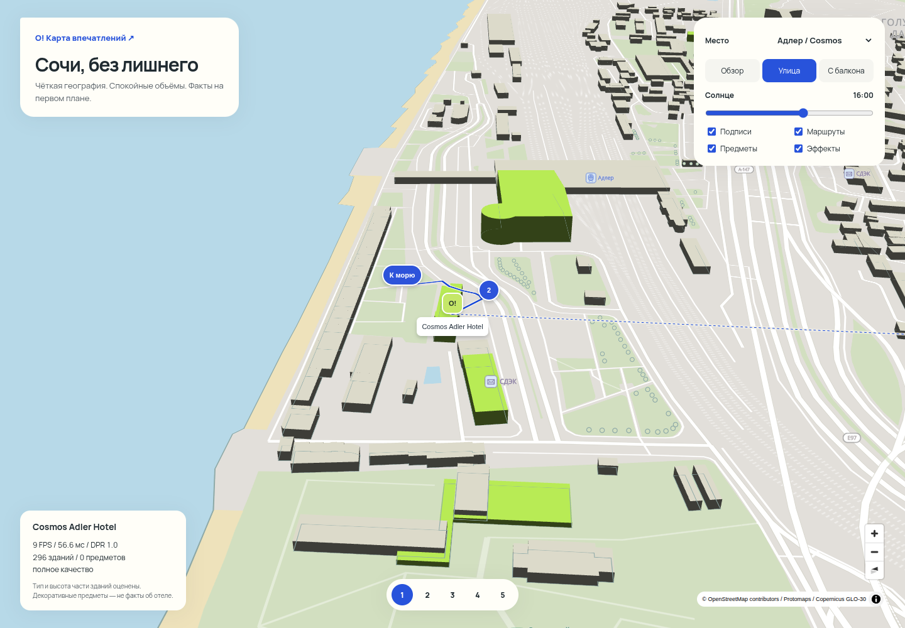
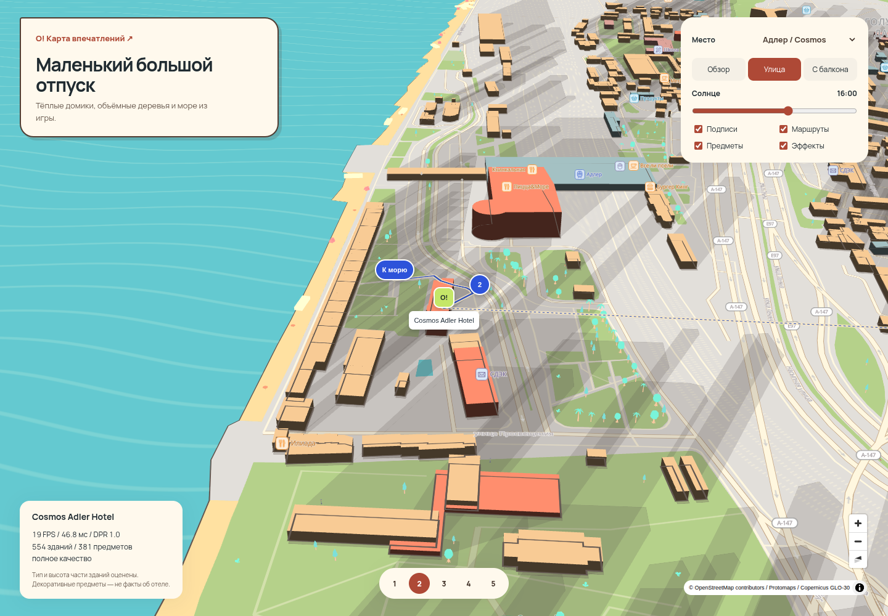
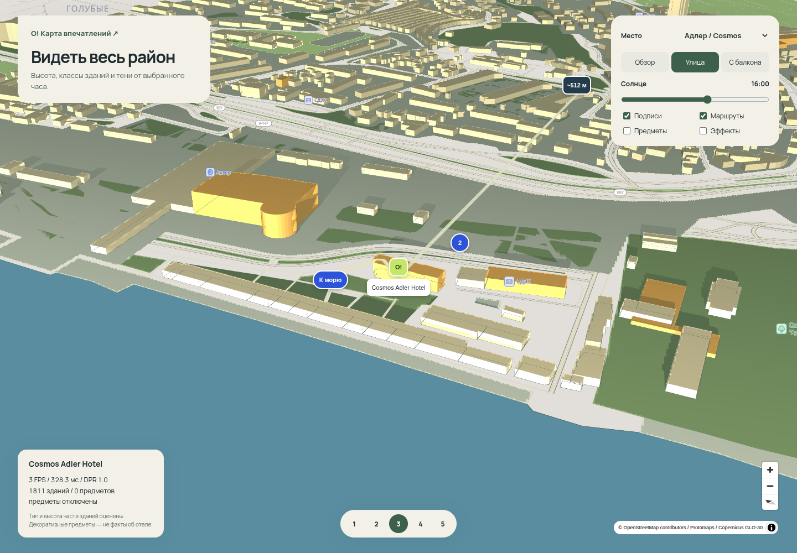
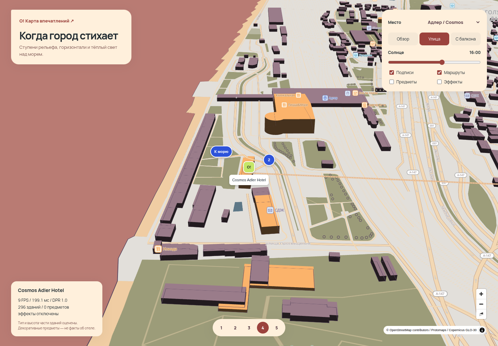
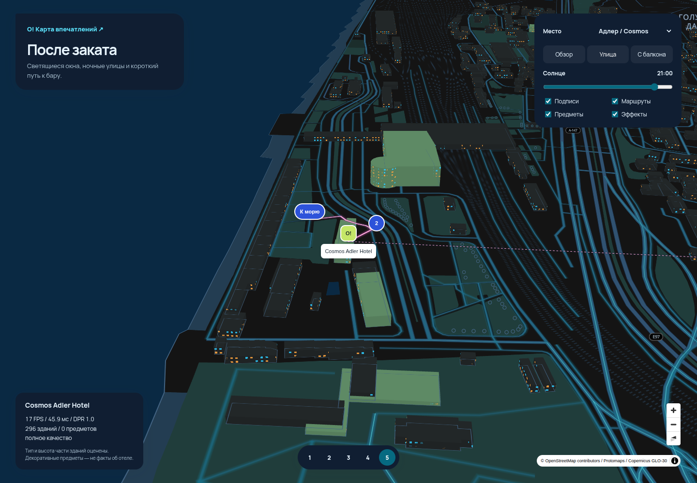

01 / спокойный
Чистый вектор
Светлая земля, ясный берег, минимум отвлекающих деталей. Маршрут и отель всегда на первом плане.
Исследовать карту ↗MapLibre + ProtomapsОдин город. Пять характеров.
Поверните город, приблизьтесь к отелю, передвиньте солнце. Во всех примерах — один район Адлера и одни данные. Отличается способ их показать.
Начать с игрушечного города ↗
Светлая земля, ясный берег, минимум отвлекающих деталей. Маршрут и отель всегда на первом плане.
Исследовать карту ↗MapLibre + Protomaps
Коралловые отели, тёплые фасады, деревья и полосы волн. Можно рассматривать район как маленькую диораму.
Погулять по городку ↗MapLibre + three.js + Kenney
Высотность и тени раскрывают плотность застройки. Солнце движется по реальной траектории выбранного часа.
Рассмотреть объёмы ↗MapLibre + deck.gl
Высота становится цветом, линии показывают склоны. Переключитесь на центр Сочи, чтобы увидеть рельеф.
Поймать свет ↗MapLibre + maplibre-contour + GLO-30
Свет в окнах, линии улиц и путь к ближайшему бару. Вечерний сценарий с отдельным характером.
Включить город ↗MapLibre + three.jsКонтуры зданий, дороги, берег, объекты и маршруты выгружены из рабочего стенда. Тип и высота части зданий определены по правилам. Деревья вне точек OSM, зонтики, окна и другие декоративные предметы иллюстрируют стиль: они не подтверждают удобства отеля.
Примеры работают с локальными данными. Счётчик показывает скорость кадров вашего браузера. Измерения и ограничения — в листе оценки.
Внешний референс: полный 3D-город Streets GL ↗Отдельное приложение, нужен интернет. Не встроено: другой движок и дополнительная стоимость сопровождения.